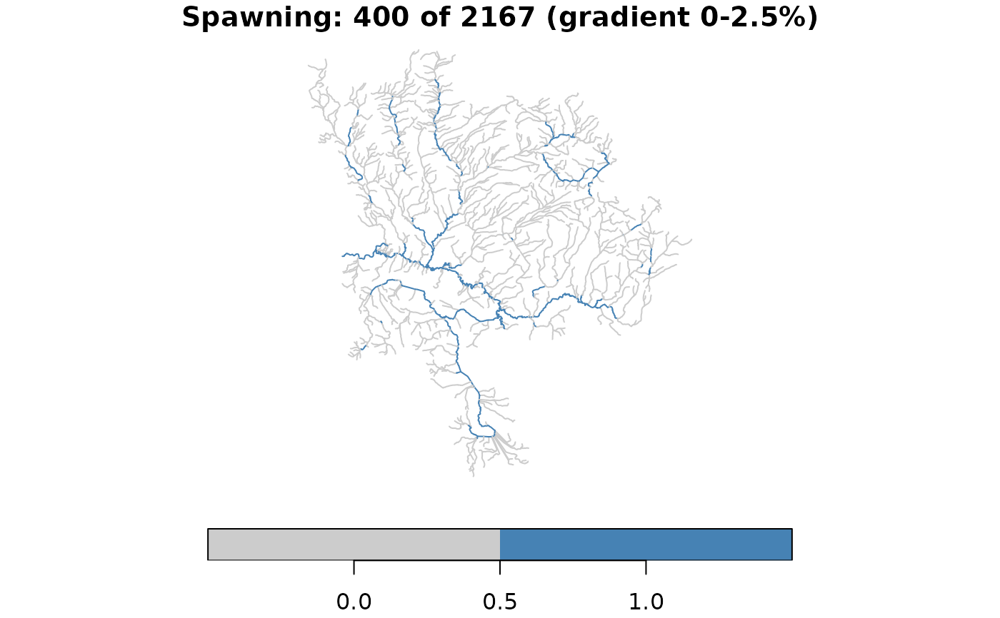
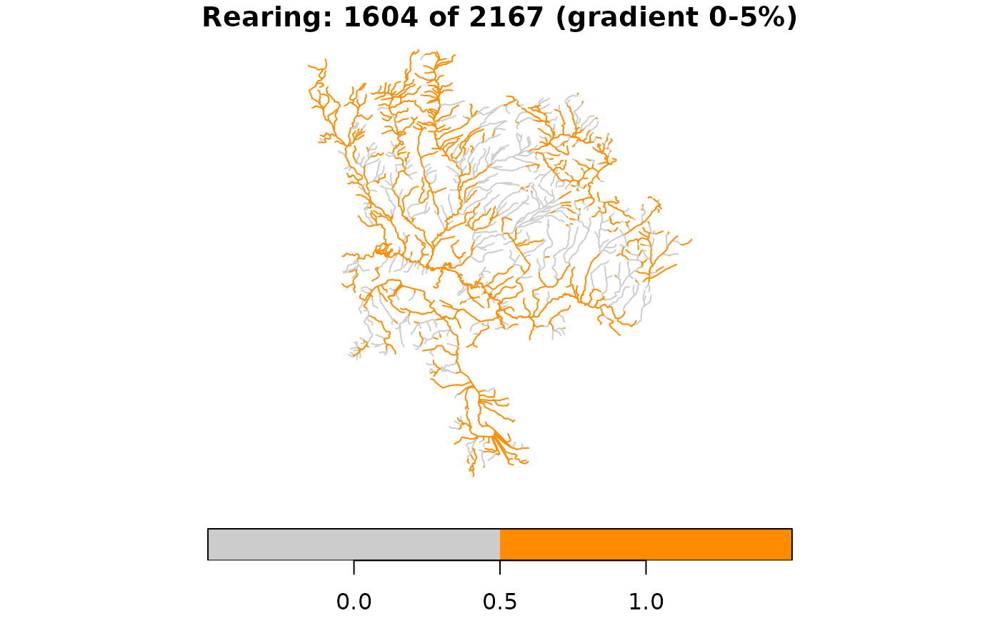

Classify Features by Attribute Ranges, Breaks, or Overrides
Source:R/frs_classify.R
frs_classify.RdLabel features in a working table by any combination of: attribute ranges
(e.g. gradient between 0 and 0.025), spatial relationship to break points
(accessible vs not), and manual overrides from a corrections table.
At least one of ranges, breaks, or overrides is required.
Usage
frs_classify(
conn,
table,
label,
ranges = NULL,
breaks = NULL,
overrides = NULL,
where = NULL,
value = TRUE
)Arguments
- conn
A DBI::DBIConnection object (from
frs_db_conn()).- table
Character. Working schema table to classify (from
frs_extract()).- label
Character. Column name to add or update with the classification result (e.g.
"spawning","accessible").- ranges
Named list or
NULL. Each element is a column name mapped to ac(min, max)range. All conditions must be met (AND). Example:list(gradient = c(0, 0.025), channel_width = c(2, 20)).- breaks
Character or
NULL. Table name containing break points. Segments with no downstream break are labelledTRUE(accessible). Usesfwa_downstream()for network position check.- overrides
Character or
NULL. Table name containing manual corrections. Must have a column matchinglabeland a join column matching the working table (default:blue_line_key+downstream_route_measure).- where
Character or
NULL. Optional SQL predicate to scope which rows are classified. Only rows matchingwhereare considered; others remainNULL. Example:"edge_type IN (1050)"to classify only lake segments. Consistent withfrs_aggregate()whereparameter.- value
Logical. Value to set when conditions are met. Default
TRUE. UseFALSEfor exclusion labels.
See also
Other habitat:
frs_aggregate(),
frs_break(),
frs_break_apply(),
frs_break_find(),
frs_break_validate(),
frs_categorize(),
frs_cluster(),
frs_col_generate(),
frs_col_join(),
frs_extract(),
frs_feature_find(),
frs_feature_index(),
frs_habitat(),
frs_habitat_access(),
frs_habitat_classify(),
frs_habitat_partition(),
frs_habitat_species(),
frs_network_segment()
Examples
# --- Concept: multi-attribute classification (bundled data) ---
d <- readRDS(system.file("extdata", "byman_ailport.rds", package = "fresh"))
streams <- d$streams
# Classify spawning habitat: gradient 0-2.5% AND stream order >= 3
spawning <- !is.na(streams$gradient) &
streams$gradient >= 0 & streams$gradient <= 0.025 &
!is.na(streams$stream_order) & streams$stream_order >= 3
streams$spawning <- spawning
message(sum(spawning), " of ", nrow(streams),
" segments are spawning habitat")
#> 400 of 2167 segments are spawning habitat
# Rearing habitat: different thresholds on the same network
rearing <- !is.na(streams$gradient) &
streams$gradient >= 0 & streams$gradient <= 0.05
streams$rearing <- rearing
message(sum(rearing), " of ", nrow(streams),
" segments are rearing habitat")
#> 1604 of 2167 segments are rearing habitat
# Plot each — this is what piped frs_classify calls produce
plot(streams["spawning"], main = paste(
"Spawning:", sum(spawning), "of", nrow(streams), "(gradient 0-2.5%)"),
pal = c("grey80", "steelblue"), key.pos = 1)

plot(streams["rearing"], main = paste(
"Rearing:", sum(rearing), "of", nrow(streams), "(gradient 0-5%)"),
pal = c("grey80", "darkorange"), key.pos = 1)

if (FALSE) { # \dontrun{
# --- Live DB: Richfield Creek — falls, params, accessibility ---
# Full pipeline: load params → extract → break at falls → classify
conn <- frs_db_conn()
# Load coho thresholds from bundled CSV
params <- frs_params(csv = system.file("testdata", "test_params.csv",
package = "fresh"))
params$CO$ranges$spawn # gradient 0-5.5%, channel_width 2+
# 1. Extract Richfield Creek from fwapg enriched streams
# fwa_streams_vw has channel_width (from fwapg regression model)
# and uses wscode/localcode (not _ltree suffix). Set options
# so classify knows the column names:
options(fresh.wscode_col = "wscode",
fresh.localcode_col = "localcode")
richfield <- frs_db_query(conn,
"SELECT ST_Union(geom) AS geom
FROM whse_basemapping.fwa_stream_networks_sp
WHERE blue_line_key = 360788426")
conn |>
frs_extract("whse_basemapping.fwa_streams_vw",
"working.demo_classify",
cols = c("linear_feature_id", "blue_line_key",
"downstream_route_measure", "upstream_route_measure",
"wscode", "localcode",
"gradient", "channel_width", "geom"),
aoi = richfield, overwrite = TRUE)
# 2. Plot BEFORE — all segments with falls location
before <- frs_db_query(conn,
"SELECT gradient, geom FROM working.demo_classify")
falls_pt <- sf::st_zm(frs_point_locate(conn,
blue_line_key = 360788426, downstream_route_measure = 3461))
plot(sf::st_geometry(before), col = "steelblue",
main = paste("Richfield Creek:", nrow(before), "segments"))
plot(sf::st_geometry(falls_pt), add = TRUE, pch = 17, col = "red", cex = 2)
legend("topright", legend = "Falls", pch = 17, col = "red")
# 3. Break at the falls (measure 3461)
DBI::dbExecute(conn, "DROP TABLE IF EXISTS working.demo_breaks")
DBI::dbExecute(conn,
"CREATE TABLE working.demo_breaks AS
SELECT 360788426 AS blue_line_key,
3460.97::double precision AS downstream_route_measure")
# 4. Classify: accessibility + coho spawning (gradient AND channel_width)
# Skeena uses channel_width as habitat predictor (MAD not applied here)
co_spawn_ranges <- params$CO$ranges$spawn[c("gradient", "channel_width")]
conn |>
frs_classify("working.demo_classify", label = "accessible",
breaks = "working.demo_breaks") |>
frs_classify("working.demo_classify", label = "co_spawning",
ranges = co_spawn_ranges)
# 5. Plot AFTER — accessibility with falls marker
after <- frs_db_query(conn,
"SELECT accessible, co_spawning, gradient, channel_width, geom
FROM working.demo_classify")
n_acc <- sum(after$accessible, na.rm = TRUE)
n_blk <- sum(is.na(after$accessible))
cols_acc <- ifelse(after$accessible %in% TRUE, "steelblue", "grey80")
plot(sf::st_geometry(after), col = cols_acc,
main = paste("Accessible:", n_acc, "| Blocked:", n_blk))
plot(sf::st_geometry(falls_pt), add = TRUE, pch = 17, col = "red", cex = 2)
legend("topright",
legend = c("Accessible", "Blocked", "Falls"),
col = c("steelblue", "grey80", "red"),
lwd = c(2, 2, NA), pch = c(NA, NA, 17))
# 6. Accessible coho spawning habitat
after$co_spawning_accessible <- after$co_spawning & after$accessible
n_sp <- sum(after$co_spawning_accessible, na.rm = TRUE)
cols_sp <- ifelse(after$co_spawning_accessible %in% TRUE, "darkorange", "grey80")
plot(sf::st_geometry(after), col = cols_sp,
main = paste("Accessible CO spawning:", n_sp, "segments"))
plot(sf::st_geometry(falls_pt), add = TRUE, pch = 17, col = "red", cex = 2)
legend("topright",
legend = c("CO spawning", "Not habitat", "Falls"),
col = c("darkorange", "grey80", "red"),
lwd = c(2, 2, NA), pch = c(NA, NA, 17))
# Clean up
DBI::dbExecute(conn, "DROP TABLE IF EXISTS working.demo_classify")
DBI::dbExecute(conn, "DROP TABLE IF EXISTS working.demo_breaks")
DBI::dbDisconnect(conn)
} # }